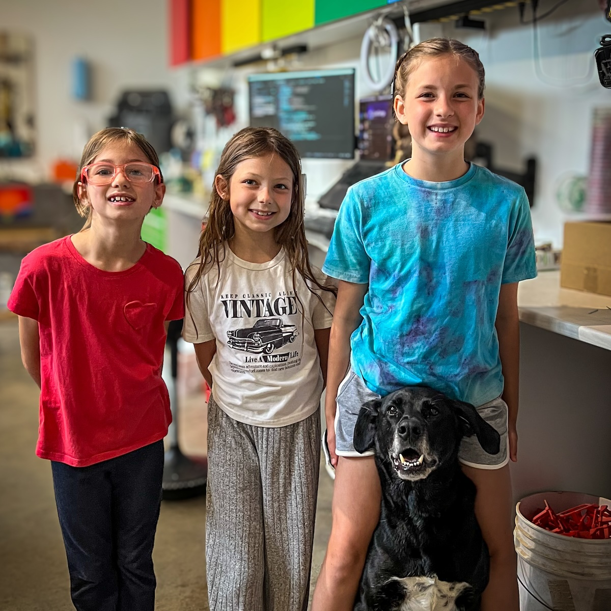

I do not build the libraries. I do not track the numbers. I have never once held a drill, though I have considered it. What I do is show up. I walk the job site, keep an eye on things, and make sure no one takes it all too seriously.
There are important duties. Greeting visitors. Inspecting snacks. Sitting directly in the middle of wherever work is happening. Reminding everyone to take breaks, preferably outside.
The work matters. The people matter more. I help with that.
Meet the rest of the family »